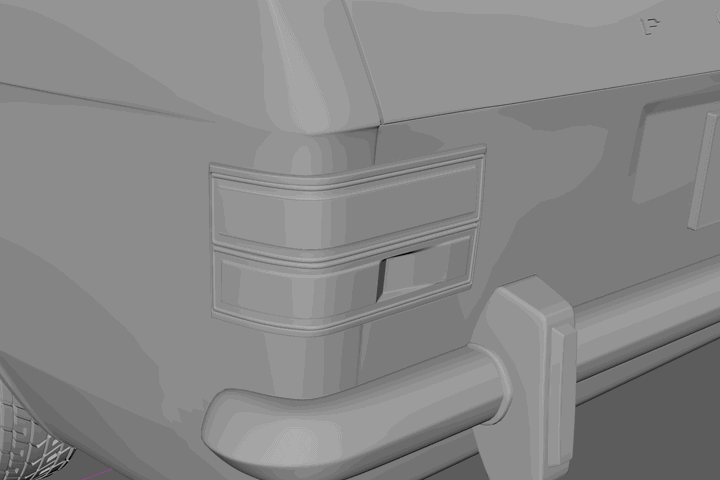
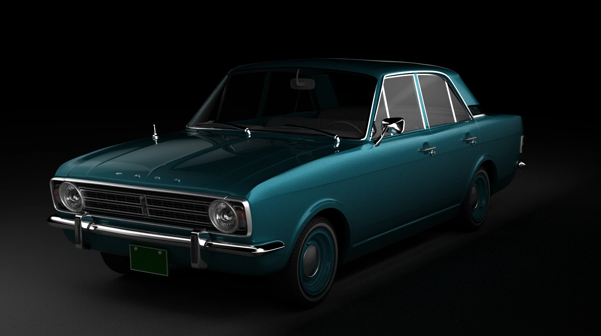

Product Modeling , shading & texturing , Freelance
Maya
회사를 다니며 주말에 잠을 자지않고 3주동안 제작한 개인 외주작업입니다. 마야 폴리곤방식을 사용했습니다. 복잡한 형태의 요즘 자동차라면 조금 어려웠을탠데 심플한 쉐입의 클래식카여서 모델링을 수월하게 할 수 있었습니다. 모델링 쉐이딩 텍스쳐링 만 작업한 건입니다.

Mesh Topo & Shading Detail
